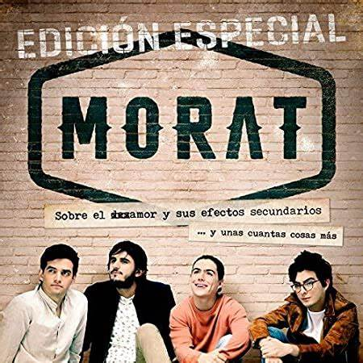
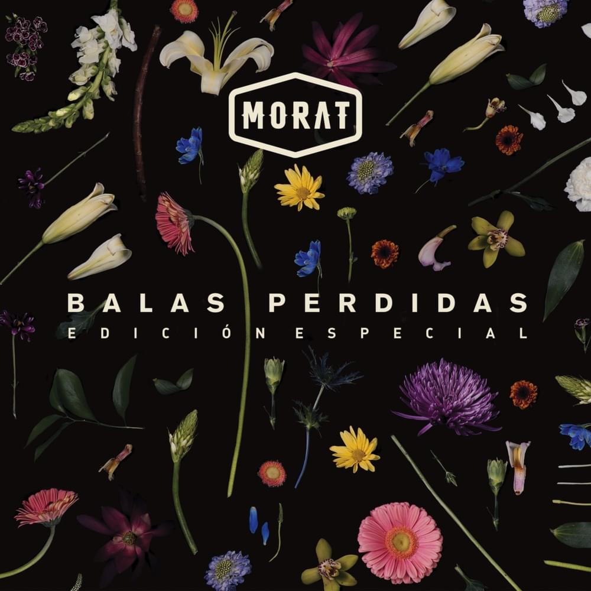
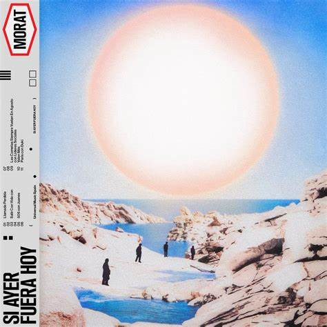

Morat es una banda colombiana de pop latino formada originalmente en Bogotá en 2011. Se dieron a conocer en 2015 con su éxito Mi nuevo vicio. Sus integrantes son Juan Pablo Isaza Piñeros, Juan Pablo Villamil Cortés, Simón Vargas Morales y Martín Vargas Morales. Hasta finales de 2016 había formado parte de la banda Alejandro Posada, pero decidió abandonar el grupo, por lo que fue sustituido por Martín Vargas, hermano de Simón.
Los chicos de Morat se conocen desde los 5 años de edad, iban juntos en el colegio Gimnasio La Montaña , y algunos de ellos en la Universidad de los Andes. Comenzaron tocando juntos en varias ocasiones y cuando cursaban la secundaria Juan Pablo Isaza tomó la decisión de crear una banda. En el año 2014, la banda realizó una sesión de grabación en Bogotá. Un sitio al que concurrían mucho como músicos principiantes fue La Tea, donde en un inicio sus fanáticos eran el personal de seguridad. Y con el paso del tiempo empezaron a tener una audiencia propia. Simón Vargas contó esta anécdota respecto a ese lugar: "Recuerdo que teníamos un juego: cada vez que tocábamos en La Tea tratábamos de adivinar cuánta gente iba a vernos...Y, por lo general, llegaban más personas de las que esperábamos." En sus comienzos, no había grandes expectativas para la banda. En su primera reunión con el representante artístico Malaver, fueron rechazados después de que escuchara una de sus primeras composiciones. La respuesta que les dio fue la siguiente: "Creo que ustedes son talentosos, pero nunca tendrán una canción en la radio. Deberían haber nacido en Argentina a fines de los setenta, porque su música no es adecuada para lo que está sucediendo en este momento". Pero una vez que los escuchó tocar en vivo en La Tea tiempo después, Malaver quedó impresionado por el potencial de los chicos y se decidió por representarlos.
Los integrantes de la banda solían ir a una finca en las afueras de Bogotá llamada "La Morat", lugar donde la banda hizo sus primeros ensayos. La finca pertenecía a un familiar del ex integrante Alejandro Posada, Antonio de Morat. Antes de adoptar el nombre Morat, eran conocidos como Malta. Pero, tiempo después, al ir a firmar con Universal, una banda brasileña ya estaba registrada como Malta, así que cambiaron su nombre a Morat.
Vocalista principal de Morat, toca el banjo, ukelele y guitarra. Es egresado de Música e Ingeniería Industrial de la Universidad de los Andes.
Vocalista principal y guitarrista de Morat, también toca piano y ukelele. Estudia Administración de Empresas de la Universidad de los Andes, está estudiando una segunda carrera con énfasis musical y es cofundador de la exitosa casa de producción Mapache.
Vocalista y bajista de Morat, maneja los modulares. Es escritor, en 2020 presentó su primer libro "A la orilla de la Luz". Estudia Historia en la Universidad de los Andes. En el 2020 creó en conjunto con la youtuber mexicana Nath Campos un podcast en Spotify llamado "Simón dice, Nath contradice".
Vocalista y guitarrista de Morat, además toca los sintetizadores. Es egresado de Diseño Gráfico de la Universidad de los Andes. Es cofundador de la reconocida marca PICHURRO studios
|  | "Sobre el Amor y sus efectos secundarios" es un disco muy homogéneo, pero con una variedad que enriquece sin perder el sello del grupo; esos “detalles” que a ellos tanto les entusiasman se suceden de forma natural. Porque su música está impregnada de raíz colombiana, pero tratada de forma muy global. Por eso el resultado es tremendamente fresco y apetece oír cada una de sus canciones. Las letras son estudiadas y trabajadas, con alusiones a García Márquez y a Neruda. El libreto del álbum viene con “instrucciones de uso” -a lo Cortázar- y poemas del cuarteto -, “son canciones que no salieron”. Un disco que relata, paso a paso y en orden, todas las facetas de una relación romántica en decadencia. El álbum ya certifica el Disco de Oro en España. |
|  | A continuación se explica el concepto que describe Morat de Balas perdidas: "Imaginen un terreno baldío en el que se va caminando, sin rumbo. No hay mucho que ver. No hay árboles, ni ríos, ni estrellas, ni sol, ni luna. Un paso tras otro se avanza, aunque no se sabe muy bien a dónde va. De repente, tan rápido como un rayo, se siente un cambio abrupto en el cuerpo. El golpe entra por el costado izquierdo, debajo del brazo y sobre la línea de las costillas. No duele pero incomoda. No se ve a nadie a quien culpar. Cosquillean las puntas de los dedos y se dan cuenta de que fueron heridos. Desde algún lugar insospechado los ha impactado una bala perdida. Su instinto les confirma que han terminado en el lugar preciso para que solo por suerte o destino esa bala haya llegado a su cuerpo. Nadie puede escapar de una bala perdida, pues nadie puede huir de lo que no espera. Y como las balas perdidas, que van y vienen sin avisar, las canciones funcionan de la misma manera. Escribir una canción es ser el tirador. Y así como hay tiradores que pierden sus balas hay compositores que extravían sus canciones. Hay canciones que se escriben para una persona y llegan a alguien más, o canciones que se escriben sin alguien en mente y terminan golpeando a una víctima insospechada. Algunas veces se dispara y se golpea a la persona equivocada, otras tantas uno recibe un disparo sin saber de dónde viene. A pesar del daño colateral, en el azar de disparar y recibir disparos, sólo esperamos que esto nunca se detenga. Que, con todo y las heridas, sigamos recibiendo estos disparos que nos sacuden el corazón y nos recuerdan que ahí sigue, palpitando, jugando ser un blanco. Acá les dejamos doce balas perdidas con la esperanza de que, de una u otra forma, los alcance alguna, como varias nos han alcanzado ya a nosotros”. |
|  | El álbum se caracteriza por el clásico estilo musical de la banda, entre pop, country, rock, balada romántica y urbano. Asimismo, el álbum fue presentado después de su sencillo "Salir con vida" junto al también cantante colombiano Feid. De este álbum, se desprenden algunos sencillos como: «Llamada perdida», «Valen más», «París» y «506» entre otros. En este álbum, están incluidas las participaciones de Juanes y Duki. El sencillo «Las cometas siempre vuelan en agosto» fue un homenaje a varios líderes sociales de Colombia. |